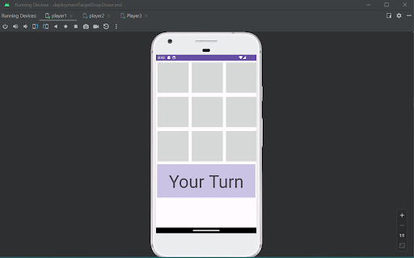

Tic Tac Toe

- Coded in Java.
- Developed a real-time, multiplayer Tic Tac Toe game and server using Android Studio.
- Implemented game logic, user interface, and error handling to create a seamless user experience.
Soccer League Registration
- Coded in C++.
- Notable achievements include efficient data manipulation, error-checking mechanisms, and the option for team collaboration, demonstrating strong problem-solving and teamwork skills.
- Showcased proficient file handling, user-friendly interface design, and efficient rendering of file contents.
Key Value Store
- Coded in C.
- Learned how to "persist" the keys and values, so that they can be retrieved by later invocations of the kv command.
- Implemented functionalities for adding, retrieving, deleting, and clearing data entries, with file I/O operations.